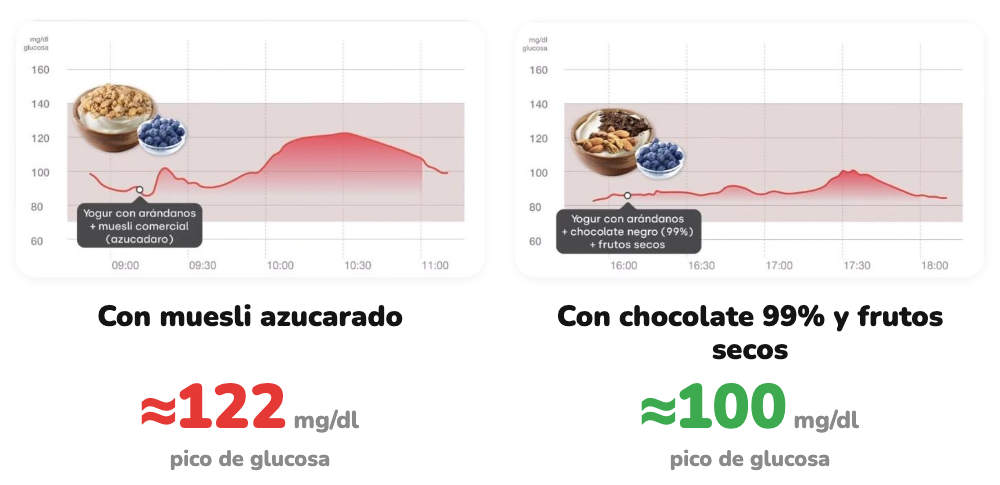

Cómo afecta
Mismo yogur. Distintos toppings.
Cambiamos lo que va encima y medimos la glucosa.
Desliza →
Hacemos visible lo invisible
Cambiamos lo que va encima y medimos la glucosa.
Desliza →

Curvas reales de una Viber; picos leídos en la gráfica. La respuesta puede variar entre personas.
Yogur natural, fruta, frutos secos y chocolate negro (más del 85%).
Desliza →
glucovibes.com